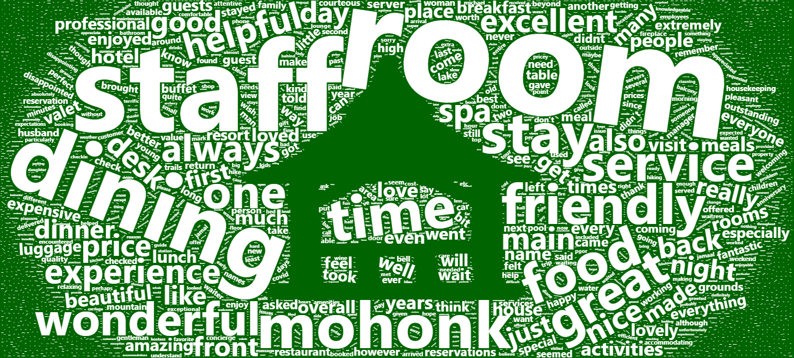
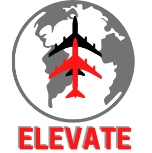

Analytics Project

Click the above image to view my current business analytics project. So far, the project contains the information about the data set I used. It also contains the methods I used to clean the data and how I went through the feature selection process. I currently have two types of models built. The first is a logistic regression model and the second is a KNN model. This project was all built using r studios.
Word Cloud Project 
Click the above image to view a word cloud. The purpose of the word cloud is to display what guest are thinking of after their stay at Mohonk Mountain House. The word cloud was made in r studios using the "wordcloud2" package. The data itself was mined from the guest surveys comment section that offered to each guest after their stay. The more frequently a word is used the larger it will appear. The empty space of the word cloud makes up the summer house that is Mohonk's logo.
Airline Project
In my Strategic Management class we have a project where myself and two other students are running a simulation where we are in charge of an airline. My role is the Chief executive officer of Human Resources and Marketing. The simulation consists of 12 quarters spaning over 3 years. Click our company logo up to see our dashboard results for each quarter.